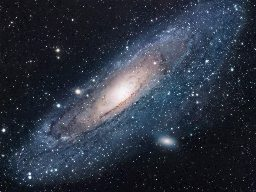

Доказательства существования Бога
Существует ли Бог? Есть ли какие-то научные доказательства существования Бога? Может люди придумали Бога для того, чтобы человеку было во что верить?
В этой статье мы рассмотрим то, что в науке называется Космологическим и Телеологическим доказательством существования Бога.
Убедиться в том, что Бог действительно существует, на самом деле совершенно не сложно. Для этого необязательно быть ученым, необязательно иметь специальное образование или знать Библию. Нужно только честно и непредвзято посмотреть на весь окружающий мир и задать себе простой вопрос: Откуда все это появилось?
Как появился весь существующий мир: человек, природа, Земля, Вселенная? Могло ли все это появиться само по себе?
ученый физик.
Артур Шавлов, известный ученый и лауреат Нобелевской премии по физике, писал:
Мир настолько удивителен, что я и представить себе не могу, будто бы он произошел по чистой случайности.[1]
Если бы кто-нибудь сказал мне, что, к примеру, мой компьютер появился сам по себе, то я бы не воспринял это даже всерьез. Компьютер - это сложное устройство, над проектированием и производством которого работало много людей. И хотя я никогда не видел этих людей, и я не видел как изготавливался мой компьютер, но я могу быть на 100% уверен, что он не появился сам по себе, что существуют люди, которые спроектировали его и изготовили.
Однако, окружающий нас мир устроен намного сложнее, и он тем более не мог появиться сам по себе. Поэтому мы можем быть уверены, что есть кто-то, кто его создал. И именно Его, Создателя нашего мира, мы называем Богом. Таким образом:
Существование окружающего мира является доказательством существования Бога, который создал этот мир.
Легендарный ученый и основоположник современной химии, Роберт Бойль, выразил это в следующих словах:
Безмерность, красота и гармония космоса, удивительное устройство животного и растительного мира, другие чудесные явления природы - все это справедливо побуждает разумного и непредвзятого наблюдателя прийти к выводу о существовании высшего, могущественного, праведного и благого Создателя.[2]
Эта мысль была близка также и другому не менее известному ученому, Альберту Эйнштейну, который писал:
Чем глубже я изучаю окружающий мир, тем большей становится моя вера в Бога.[3]
Мир, в котором мы живем, настолько удивительно и сложно устроен, что даже для современной науки многие природные процессы остаются неразрешимой загадкой. Наука, к примеру, до сих пор не знает ответа на такой казалось бы простой вопрос как: что способствует росту зубов у ребенка. У ученых лишь имеются разные теории и предположения на этот счет, но пока механизм роста зубов до конца непонятен. О других примерах удивительного устройства нашего мира рассказывается в научно документальных фильмах в разделе Видео на тему: Существует ли Бог.
То, что весь наш настолько сложный и удивительный мир был Кем-то создан - в это даже не надо верить, это просто очевидный факт. А вот, чтобы поверить в то, что все это произошло само собой, случайно, - для этого действительно нужна очень большая вера, которую бы человеку внушали всю жизнь с детства. И такая вера действительно внушается с помощью так называемой теории эволюции.
Несмотря на то, что по мнению многих известных ученых теория эволюции противоречит фундаментальным законам физики (об этом читайте подробнее в статье Опровержение теории эволюции), она, тем не менее, продолжает оказывать огромное влияние на людей в современном обществе. По результатам недавних исследований, проводившихся Всероссийским центром изучения общественного мнения, 35% опрошенных заявили, что верят в теорию эволюции.[4]
Таким образом, приблизительно третья часть общества поддались влиянию этой широко пропагандируемой идеи и поверили в то, что все само по себе появилось и само по себе эволюционировало в высокоразвитые формы жизни. Но каждый мыслящий человек прекрасно понимает, что само по себе ничего не появляется. Наш удивительный мир был Кем-то создан. Поэтому, как говорил Роберт Милликен, тоже обладатель Нобелевской премии по физике:
Мне никогда не приходилось встречать думающего человека, который бы не верил в Бога.[5]
Читать дальше:
Другие статьи в разделе Наука о Боге
:
- о Библии:
Список литературы:
- [1] Schawlow, Arthur. Optics and Laser Spectroscopy. University of California, 1998. p.19
- [2] Seeger, Raymond.
Boyle, Christian Gentleman
. The Journal of the American Scientific Affiliation, 37 (September 1985): 183-184. - [3] Holt, Jim.
Science Resurrects God
. The Wall Street Journal, December 24, 1997. - [4] Исследование опубликовано в 2009 г.
- [5] Millikan, Robert A.
A Scientist’s God
, in Collier’s. The National Weekly, October 24, 1925. Collier’s Publishing Company.